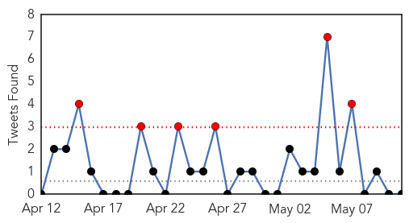
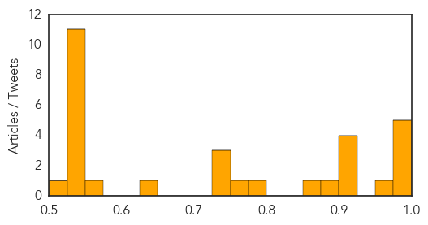

Unknown
30-Day Web Trend
30-Day Twitter Trend
6 alerts, 0 warnings

Article Locations

Article Confidences
Top Articles:
- 0.997
- MERS Virus Precaution from Camels Advise from Saudi Arabia
- 0.995
- Unravelling the truth: 20 facts you should know about MERS
- 0.994
- Health precautions
- 0.979
- American MERS patient released from hospital after testing negative
- 0.977
- First MERS case detected in Lebanon
- 0.957
- Lyme Disease Risks Rising Doctors Warn
- 0.917
- Chicago Tribune
- 0.917
- Chicago Tribune
- 0.917
- Chicago Tribune
- 0.910
- The world windows to Thailand
- 0.894
- Parasitic Infections Are a Big Problem in the United States
- 0.866
- Mule deer are seen in snow during a late spring snow storm in Golden
- 0.787
- Next steps to combat polio in the Middle East - Syrian Arab Republic
- 0.763
- Saudi Arabia issues warning about virus linked to camels
- 0.742
- Indonesian Pilgrim Tests for MERS in Saudi Arabia: Report
- 0.738
- Lyme disease cases almost triple
- 0.733
- Khader prepares city for monsoon onslaught
- 0.625
- No water in Rawalpindi areas for four days
- 0.575
- Sudan Vision Daily
- 0.549
- Deadly suicide bombing strikes southern Yemen
- 0.549
- Pro-Russia separatists claim referendum victory in east Ukraine
- 0.549
- S. Sudan army, rebels accuse each other of violating ceasefire deal
- 0.549
- Nigeria kidnappers free Dutch hostages
- 0.549
- New York police recruit Muslim informants
- 0.549
- Iran’s president offers transparency in nuclear talks
- 0.549
- Hollande offers to host security summit on Boko Haram
- 0.549
- Austria’s bearded drag queen wins Eurovision
- 0.538
- Brazil confirms second case of atypical mad cow disease
- 0.527
- الاخبار المصورة
- 0.526
- Women should not shy away from discussing kidney diseases: Surgeons
- 0.524
- Emergency Plan of Action (EPoA): Afghanistan: Floods and Landslides DREF Operation n° MDRAF002 - Afghanistan
Top Tweets:
-
No tweets found for May 11, 2014